BERITA BAIK UNTUK SEMUA RAKYAT MALAYSIA!
بِسْمِ ٱللّٰهِ ٱلرَّحْمَـٰنِ ٱلرَّحِيمِ
Assalamualaikum!
Khas Kepada:
Daripada:
Alhamdulillah!
Telah Ditemui Jalan Keluar Terbaik Yang Lebih Terjamin Untuk Selesaikan Masalah Perancangan Pendapatan Anda.
Ia Adalah Sebagai Persediaan & Bekalan Sepanjang Hayat Dari Sekarang Sehingga Bersara Dan Seterusnya Keakhir Hayat.
PENEMUAN TERBARU OLEH PAKAR!
$MART INSTANT MULTI - PURPOSE $IMULATOR
$IMP$
(Perancang, Penjimat & Penambah Wang Dalam Satu Masa)
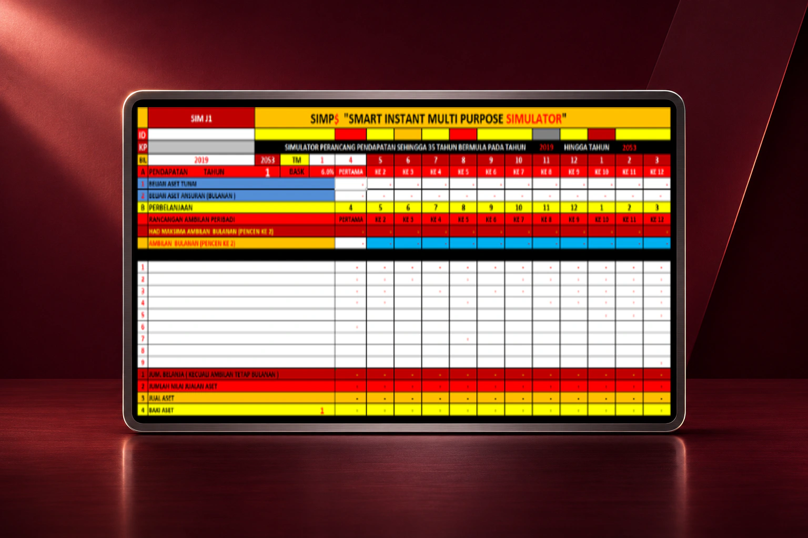
Iaitu Satu Sistem Simulator Pintar Instan Pelbagai Guna Untuk Merancang Pendapatan.
Dari
1 TAHUN HINGGA
35 TAHUN
Akan Datang
YANG PERTAMA & SATU-SATUNYA
Di Malaysia & Di Dunia Telah Berjaya Dicipta.
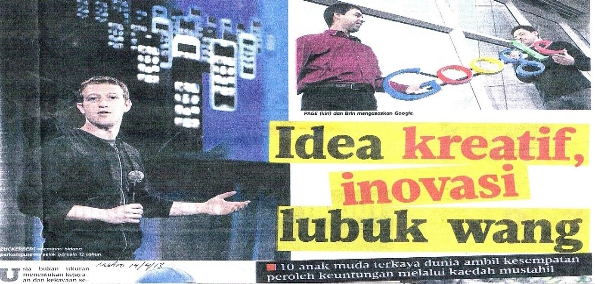
Dalam Masa Yang Sama Beliau Juga Berjaya Menginovasikan
HARTA INTELEK MAYA
Daripada Industri Teknologi Maklumat Menjadi Suatu
HOLLYGOLD®
Telah Mendapat Kelulusan
‘TRADE MARK’
Daripada PERBADANAN HARTA INTELEK MALAYSIA Pada 22.8.2012.
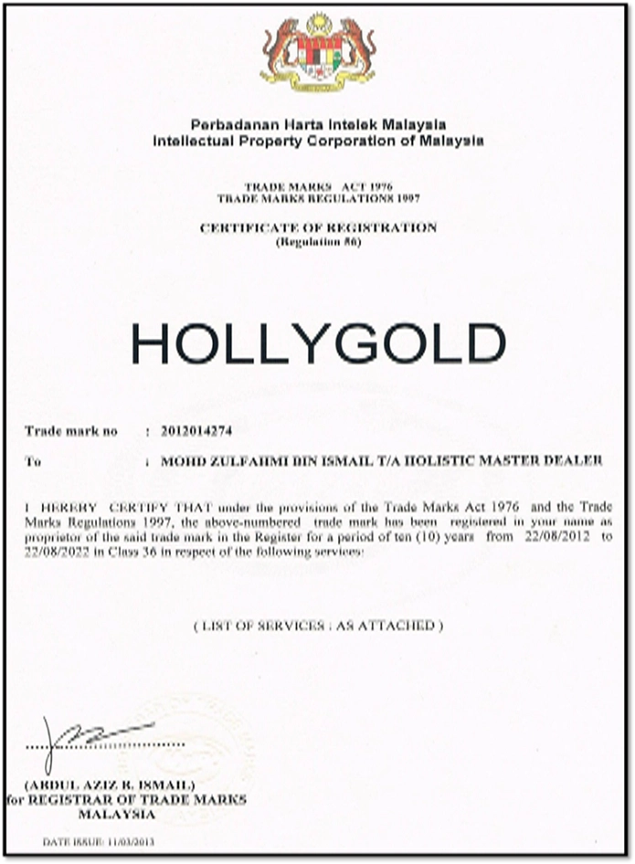 Jauh Lebih Baik & Lebih Bernilai Daripada JONGKONG EMAS, BITCOIN DAN LAIN-LAIN LAGI. Kini Siapa Sahaja Berpeluang Untuk Hidup Senang & Tenang Termasuk Anda. Buat Pertama Kalinya Dibuka Peluang Lebih Mudah, Lebih Murah Dan Lebih Terjamin Serta InsyaAllah Lebih Pasti Untuk Anda Dapat Miliki WANG SIMPANAN / ASET BERNILAI TINGGI (ABT) Berjumlah Lebih Daripada RM350,000
* 35 TAHUN
LEBIH CEPAT
* DAPAT MILIKI WANG / ABT DALAM SATU MASA
* WANG LEBIH BANYAK
RM322,536
Berbanding
Jika Menyimpan Di Dalam Bank, Amanah Saham Atau Koperasi (BASK)
Yang Hanya Dapat
RM28,839
PADA TAHUN KE 15.
(Faedah/Dividen 5%)
Semua Itu Boleh Anda Miliki Dengan
7 LANGKAH MUDAH SAHAJA :
1) DAFTAR SEBAGAI AHLI (KEP$)
2) SCAN / RANCANG PENDAPATAN
3) TUKAR WANG KEPADA ABT
4) SEWAKAN KEPADA KSM
5) PANTAU PERNIAGAAN ANDA DARI RUMAH
6) TAMBAH ATAU JUAL ABT BILA PERLU
7) CAPAI 350 UNIT ABT / RM350,000 DAN DAPAT “PENCEN / PENCEN KE 2“
ALIRAN PROSES PERNIAGAAN JUAL BELI & SEWA ABT
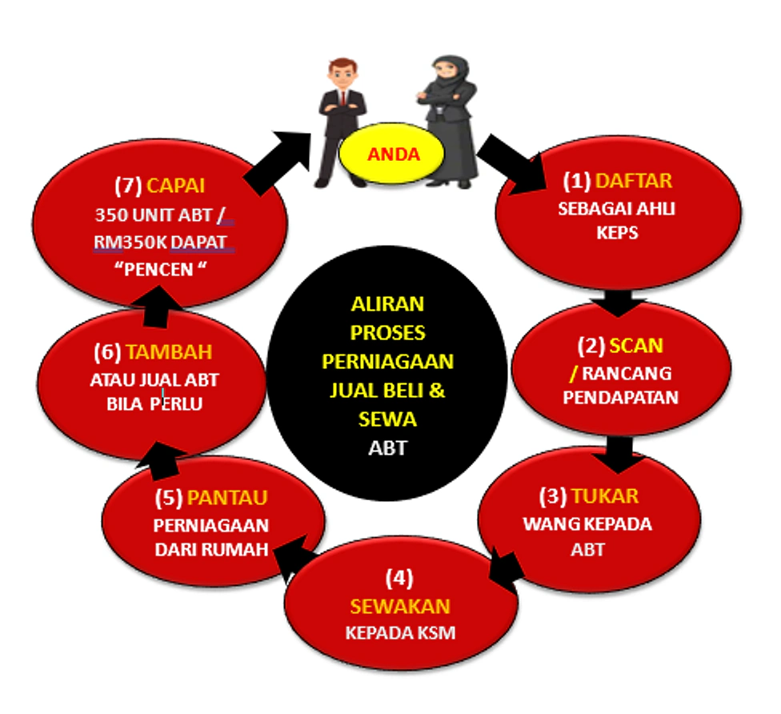
Walaupun Pendapatan Anda Kurang Daripada
RM1,500 / Bulan
Dan Mampu Menabung Hanya
RM100
Sahaja Setiap Bulan.
TETAPI
InsyaAllah, Anda Pasti Boleh Miliki Wang Simpanan / ABT Berjumlah Lebih
RM350,000
Dalam Masa Diantara
1 TAHUN HINGGA
15 TAHUN SAHAJA.
Berbanding Melalui BASK Ambil Masa
50 Tahun
Baru Dapat
35 TAHUN
Lebih Lambat Daripada $IMP$.
Ditambah Pula Berpeluang Untuk Mendapat
“PENCEN”
LEBIH RM7,000
Setiap Bulan Sampai Bila-Bila. Walaupun Anda Pekerja / Pesara Swasta, Peniaga / Bekerja Sendiri, Petani / Nelayan, Surirumah / Ibu Tunggal.
Bagi Kakitangan / Pesara Kerajaan Pula Akan Mendapat
“PENCEN KE 2”
LEBIH RM7,000
Setiap Bulan Sampai Bila-Bila. InsyaAllah! Semua Itu Pasti Anda Boleh Capai Melalui
PERNIAGAAN JUAL BELI & SEWA ABT
(HARTA INTELEK MAYA)
YANG SAH, PATUH SYARIAH, HALAL TANPA RIBA.
Selain Daripada Itu Anda Dapat Ketahui
“RAHSIA”
LEBIH 20 MANFAAT BESAR LAIN
Apabila Anda Mendapat Khidmat Nasihat PAKAR $IMP$
Untuk Dapatkannya, Anda Hanya Perlu Daftar Menjadi
AHLI KUMPULAN EKSKLUSIF PAKAR $IMP$ (KEP$)
1) YURAN PENDAFTARAN
PERCUMA!
PERCUMA!
PERCUMA!
(Konsultan Lain Daftar/Buka Fail RM500)
2) YURAN PAKAR $IMP$
PERCUMA!
PERCUMA!
PERCUMA!
SELAMA 3 TAHUN
(Yuran Konsultan Lain Lebih Kurang RM1,000 / Bln. @ RM12,000 Setahun)
Bagi Sesiapa Yang Berpendapatan/Gaji Kasar Tidak Lebih Daripada
RM5,000
Atau Miliki Wang Simpanan Tidak Lebih Daripada
RM30,000
Bagi Yang Berpendapatan Lebih RM5,000 Dan Wang Simpanan Lebih RM30,0000 Yuran Pakar $IMP$ Hanya Lah Diantara
1% HINGGA 10% SAHAJA
Daripada Untung Kasar Setahun.
Tak Perlu Keluar Wang Poket Sendiri, Yuran Akan Dipotong Daripada Keuntungan.
Yuran Perlu Di Bayar Hanya Selepas Setahun
TAK UNTUNG TAK PAYAH BAYAR YURAN PAKAR $IMP$.
Apa Yang Anda Perlu Bayar
Hanyalah
3) UPAH SCAN / RANCANG PENDAPATAN
Hanya
RM50 SAHAJA / SCAN
(Pakar $IMP$ Akan Scan Bagi Pihak Anda)
Dengan Melakukan Scan Pendapatan, Anda Akan Dapat Ketahui:
1) Anggaran Pendapatan Dari 1 Tahun Hingga 35 Tahun Akan Datang.
2) Sama Ada Wang Anda Berkurangan Atau Ada Lebihan.
3) Bulan & Tahun Berapa Anda Boleh Capai RM350,000.
4) Berapa Tahun Lagi Dari Sekarang Ia Boleh Dicapai.
5) Berapa Jumlah Sebenar Wang Yang Anda Akan Dapat.
6) Berapa Unit ABT Anda Akan Dapat Dan Berapa Nilainya.
7) Bilakah Tarikh Matang.
8) Nilai Sebenar 350 Unit ABT Di Tarikh Matang.
9) Berapa “Pencen / Pencen Ke 2” Anda Akan Dapat Dari Tahun 1 Hingga 35 Tahun.
10) Anda Boleh Buat Keputusan & Pilihan Bila Nak Ambil Duit “Pencen / Pencen ke 2”.
11) Bila Nak Beli Atau Nak Jual ABT Milik Anda.
Melalui Scan / Rancang Pendapatan, Anda Akan Dapat Ketahui Banyak Perkara.
Sebab Itu Lah Sangat Penting & Wajib Untuk Anda Daftar Sebagai Ahli KEP$ Dan Scan Pendapatan Anda Sekarang Juga.
Bermula Dengan Hanya
RM50 SAHAJA / SCAN
INSYAALLAH!
NASIB ANDA SELEPAS INI & PADA MASA AKAN DATANG, AKAN BERUBAH JAUH LEBIH BAIK, PASTI!
Dapatkan Maklumat Lanjut Segera! Sekarang Juga!
2) PENGENALAN
35 TAHUN
Lagi Selepas Bersara.
TETAPI
Adakah Wang Simpanan Anda Mencukupi? Bolehkah Bertahan Sehingga Tempoh Tersebut?
Sedangkan Kos Sara Hidup Naik Sepanjang Masa!
Sudahkah Anda Buat Perancangan Pendapatan Hingga 35 Tahun Akan Datang? Jika Belum
LAKUKAN SEGERA
SEKARANG JUGA!
Jangan Tunggu Hingga Wang Simpanan Hampir Habis Atau Sudah Habis Baru Anda Tersedar.
Ketika Itu Menyesal Air Mata Darah Sekali Pun Tidak Berguna Lagi!
ANDA MESTI!!
Rancang Pendapatan Anda Sehingga
35 TAHUN AKAN DATANG
Kerana Tidak Mustahil Umur Anda Panjang Sebagaimana Tun Dr Mahathir Mohammad.
Tetapi Bagaimana Nak Buat Perancangan Pendapatan?
Sampai 35 Tahun Pulak Tu! Satu Tahun Pun Tak Terbuat! Inikan Pulak 35 Tahun!
Berbagai Alasan Diberikan. Tak Pandai, Tidak Ada Ilmu, Tidak Ada Masa Tidak Ada Sistem Yang Dapat Membantu.
Nak Upah Konsultan Yuran Terlalu Mahal. Beribu Ringgit! Dan Ambil Masa
3 HINGGA 6 BULAN!!
Lantaklah! Duit Masih Berjuta Lagi Tak Akan Habis!
Itulah Sebabnya Kenapa Terlalu Ramai Yang Tak Rancang Pendapatan. Mereka Rasa Wang Mereka Tak Akan Habis Sampai Bila-Bila. Hakikatnya Tak Sampai
3 TAHUN
Wang Mereka Telah Habis
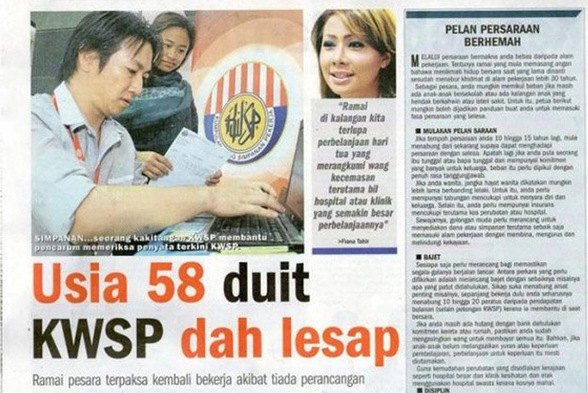
Tak Rancang Pendapatan Adalah Salah Satu Sebab Utama Kenapa
1) HAMPIR 300,000
Orang Diistihar Muflis Termasuk Orang Muda
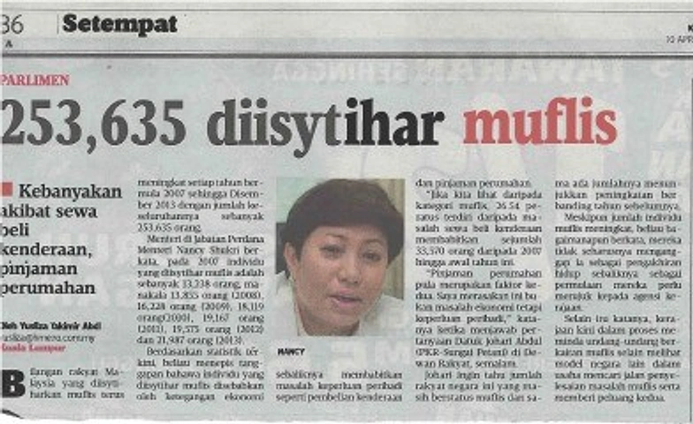
Tidak Mustahil Anda Juga Akan Diistihar Muflis.
Dikejar Ah Long Siang & Malam.
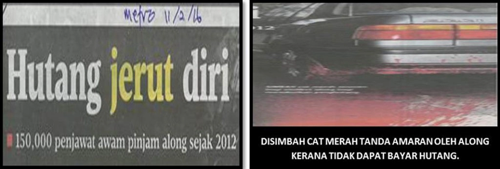
Jika Tidak Rancang, Berjimat & Tambah Pendapatan Dalam Satu Masa.
Orang Miskin Sebelum & Selepas Bersara.
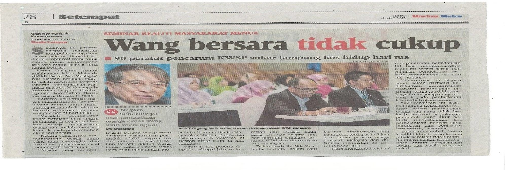
Merempat, Mengemis, Mengharap Belas Ihsan Anak Menantu & Masyarakat.
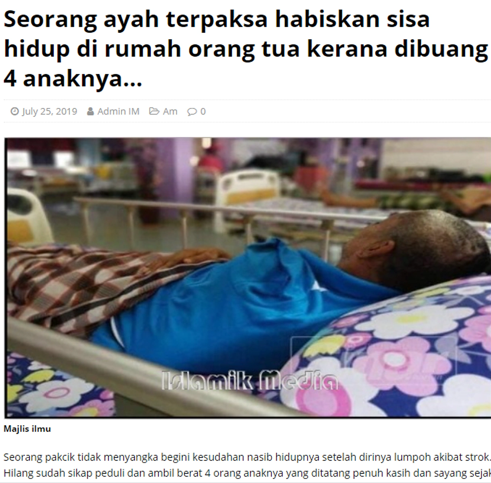
Dibuang Anak Menantu Kerumah Orang Tua, Hidup Menderita Hingga Ke Akhir Hayat.
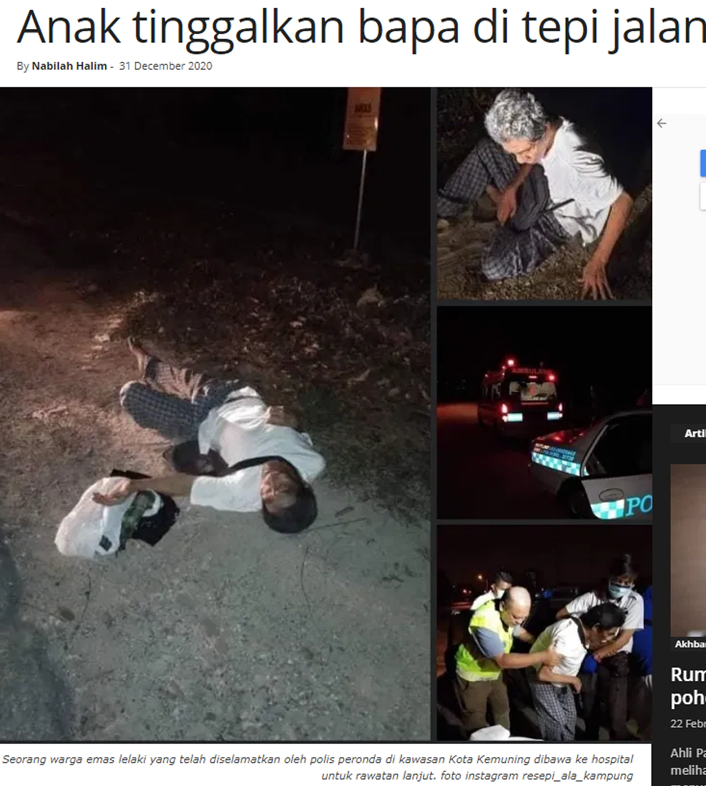
Pada Tahun 2021 Yang Lalu!
Yang Paling Teruk, Menyedihkan & Amat Menyayat Hati, Ada Yang Sanggup Bunuh Diri Sendiri & Ahli Keluarga Akibat Tidak Tertahan Menanggung Derita.
Adakah Anda Ingat Perkara Tersebut Mustahil Boleh Berlaku Kepada Diri Anda?
Semoga Allah Jauhkan Itu Semua Daripada Berlaku Kepada Diri & Keluarga Anda. Sebab Itulah Anda Mesti Lakukan Sesuatu Sekarang Juga.
Ingatlah, Tidak Ada Yang Mustahil Didunia Sekarang Ini Sedangkan
JUTAWAN BAHKAN BILLIONAIRE PUN BOLEH BANKRUP
Inikan Pula Baru Ada RM10 Juta.
Jika Tidak Rancang, Jimat Berbelanja & Tambah Wang Dalam Satu Masa, RM10 Juta Tersebut Akan Habis Dalam Masa Beberapa Tahun Sahaja.
Anda Ada RM10 Juta?
Jika Tak Ada, Lagilah Kena Lebih Berhati-hati & Berhemat.
Masa Untuk Anda Lalui Masih Panjang, Mungkin Hingga 35 Tahun Lagi Selepas Bersara.
Dengan Baki Wang Simpanan Yang Masih Ada Ditangan Anda Sekarang, Adakah Anda Boleh Bertahan Hidup Sehingga Tempuh Tersebut?
Berbagai Cabaran & Dugaan Akan Dan Terpaksa Anda Tempuhi.
Samada Yang Sudah Dijangka Atau Yang Diluar Jangkaan. Ia Boleh Menyebabkan Anda Muflis, Miskin Sebelum & Selepas Bersara.
Sudahkan Anda Buat Persediaan Untuk Hadapi Itu Semua? Bagaimanakah Cara Terbaik Untuk Anda Atasinya?
Tak Apa, Jangan Risau. Anda Bernasib Baik. Kini Sudah Ada Satu Sistem Yang Dapat Membantu Selesaikan Masalah Perancangan Pendapatan Anda.
ALHAMDULILLAH!
Selain Daripada Dapat Merancang Dari
1 TAHUN HINGGA 35 TAHUN
Akan Datang, Ia Juga Dapat Menjimatkan Wang Anda Beribu-Ribu Ringgit.
Bahkan Ia Dapat Membuka Jalan & Memberi Peluang Untuk Anda
1) MENAMBAH WANG SIMPANAN DAN MILIKI ASET BERNILAI TINGGI (ABT) Sehingga Lebih
RM350,000
Lebih Cepat Daripada Simpanan Dalam Bank, Amanah Saham Atau Koperasi (BASK)
2) MENDAPAT “PENCEN / PENCEN KE 2”
Lebih
Sampai Bila-Bila
Serta Dapat Ketahui
3) “RAHSIA” LEBIH 20 MANFAAT BESAR YANG LAIN.
Semua Itu Diperolehi Dalam Satu Masa Apabila Anda Menjadi
AHLI KUMPULAN EKSKLUSIF PAKAR $IMP$ (KEP$)
Bayangkan! Betapa Gembira & Senangnya Hati Anda Apabila Suatu Hari Nanti Anda Benar-Benar Sudah Miliki Wang Simpanan / ABT Lebih
RM350,000
Dan Dapat “Pencen / Pencen Ke 2”
Sampai Bila-Bila.
Sebaliknya Nasib Anda Boleh Berubah Jika Anda Abaikan Peringatan Ini Dan Tidak Melakukan
SCAN / RANCANG PENDAPATAN.
Kini Sudah Ada Jalan Mudah, Murah & Lebih Terjamin Tetapi Amat Berkesan Untuk Selesaikan Masalah Itu Semua. Jadi,
TIDAK ADA ALASAN LAGI UNTUK ANDA!.
Ayuh! Tukarkan Mimpi Ngeri Anda Kepada Satu Impian Indah Yang InsyaAllah, Pasti Menjadi Nyata.
Mulakan Langkah Pertama Anda Dengan Mendaftar Menjadi Ahli KEP$ & Scan Pendapatan Dengan Hanya
Hari Ini Juga.
Anda Hanya Lakukan Satu Tindakan Segera Yang Kecil & Dengan Modal Yang Tersangat Kecil Tetapi Kesannya Amat Besar.
Ia Akan Membuka Peluang Untuk Anda Mendapat Wang Simpanan / Aset Bernilai Lebih
RM350,000
Serta “Pencen / Pencen Ke 2” Lebih
RM7,000 SEBULAN
Sampai Bila-Bila.
Ia Akan Menentukan Baik Buruk, Untung Rugi Nasib Masa Hadapan Anda.
PILIHAN DITANGAN ANDA!
Jangan Sampai Anda Terlepas Peluang Baik Ini Dan Menyesal Tak Sudah Kemudian Nanti!
3) APA ITU $IMP$
$mart Instan Multi - Purpose $imulator
$IMP$
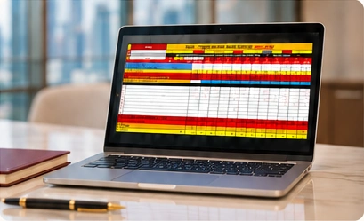
Manage by Pakar $IMP$
RANCANG, JIMAT & TAMBAH WANG
(Dalam Satu Masa)
Simulator Pintar Instan Pelbagai Guna Perancang Pendapatan
YANG PERTAMA DAN SATU-SATUNYA DI MALAYSIA & DI DUNIA.
$IMP$ Adalah Satu Sistem Yang Dapat Merancang Pendapatan Dari
1 TAHUN HINGGA 35 TAHUN
Akan Datang.
Perancangan Tersebut Dapat
1) MENJIMATKAN WANG
Beribu Hingga Beratus Beribu Ringgit
2) MENJIMATKAN WAKTU
Berbulan-Bulan Hingga Bertahun-Tahun Berbanding Kaedah Biasa.
Dalam Masa Yang Sama, Dengan Menggunakan $IMP$ Dapat Memberi Petunjuk & Jalan Bagaimana Untuk Anda
3)
MENAMBAHKAN WANG
& ASET
Secara Senyap Berpuluh Hingga Beratus Ribu Ringgit Setiap Tahun Sehingga Mencapai Lebih
RM350,000.
Serta Berpeluang Untuk Mendapat
“PENCEN / PENCEN KE 2”
Sehingga Lebih
RM7,000
Setiap Bulan Sampai Bila-Bila.
Dengan Adanya
$IMP$
Ia Dapat Beri Peluang Untuk
SCAN / RANCANG PENDAPATAN
Anda, Yang Mungkin Sebelum Ini Tidak Dapat, Tidak Mampu & Tidak Pernah Anda Dilakukan.
Tidak Melakukan Perancangan Pendapatan Adalah Salah Satu Faktor Utama Yang Menyebabkan Timbul Masalah Kewangan Yang Menyebabkan
1) Hampir 300,000 Orang Muflis
2) Lebih 1 Juta Miskin Sebelum Selepas Bersara
3) Lebih 1,000 Orang Bunuh Diri Pada 2021.
Sebab Itu Kenapa Tersangat Penting Untuk Melakukan Perancangan Pendapatan Anda Sehingga
35 Tahun
Akan Datang.
Hanya $IMP$ Yang Dapat Rancang, Jimat & Tambah Wang Dalam Satu Masa.
Seterusnya Selesaikan Masalah Pendapatan Anda Sehingga Ke Akhir Hayat.
===============================
FUNGSI $IMP$
1). MEMBERI PETUNJUK AWAL
Bila Kemungkinan Masalah Pendapatan Bakal Berlaku Dan Cara Selesaikannya.
Dengan Itu Dapat Mengelak Wang Anda Daripada Habis Tanpa Disedari Dan Rugi Berpuluh Hingga Beratus Ribu Ringgit.
2). MEMBERI GAMBARAN
Aliran Pendapatan Yang Lebih Jelas Tentang Kedudukan Pendapatan Anda Dari 1 Tahun Hingga 35 Tahun Akan Datang Pada Masa Sekarang.
3). MEMBUAT PERBANDINGAN
Dan Memberi Maklumat Tentang Kaedah Simpanan Atau Pelaburan.
Yang Mana Satukah Beri Peluang Untuk Anda Mendapat Pulangan Yang Lebih Baik, Lebih Cepat, Lebih Untung Lebih Terjamin & Lebih Berkat.
4). MILIKI IMPIAN BESAR & MATLAMAT YANG JELAS.
Ia itu Untuk Dapatkan Wang Simpanan/ABT Bernilai
RM350,000
“PENCEN /PENCEN Ke 2”
Lebih
RM7,000 SETIAP BULAN
Pada Masa Yang Telah Dirancangkan.
5). PULIHKAN SEMANGAT, KEMBALIKAN KEYAKINAN DIRI & BERI KEBERANIAN
Untuk Anda Terus Berusaha Dengan Lebih Gigih Mengharungi Cabaran Kehidupan Dengan Penuh Yakin.
Ini Adalah Kerana Anda Tahu Impian Besar & Matlamat Anda InsyaAllah Pasti Tercapai Dalam Masa Yang Telah Ditetapkan Oleh Pakar $IMP$.
===============================
CIRI-CIRI $IMP$
1). 3 DALAM 1
(Rancang, Jimat & Tambah Pendapatan Dalam Satu Masa).
2). TAK PERLU BUAT SENDIRI.
Scan / Perancangan Pendapatan Akan Dilakukan Bagi Pihak Anda Oleh Pakar SIMP$.
3). SCAN DARI 1 TAHUN HINGGA 35 TAHUN
Akan Datang, Pada Masa Sekarang.
(Konsultan Lain Maksima Hingga 5 Tahun Sahaja).
4). SCAN SIAP DALAM MASA KURANG DARIPADA
1 BULAN
(Konsultan Lain Diantara 3 Bulan Hingga 6 Bulan).
5). JIMATKAN BELANJA
Beratus Hingga Beribu Ringgit Untuk Kos Pendaftaran & Yuran Kepakaran.
6). TAMBAHKAN PENDAPATAN
Beribu Hingga Beratus Ribu Ringgit Hasil Daripada Perniagaan Jual Beli & Sewa ABT.
7). BOLEH MEMBANTU BERBAGAI GOLONGAN MASYARAKAT
Khasnya:
1) Kakitangan Kerajaan & Swasta.
2) Peniaga & Bekerja Sendiri.
3) Petani & Nelayan.
4) Suri Rumah & Ibu Tunggal.
5) Pesara & Bakal Besara.
8). DIPANTAU OLEH PAKAR $IMP$
Yang Berpengalaman Dalam Bidang Pengurusan & Perniagaan Lebih
50 Tahun.
9). KETAHUI “RAHSIA” LEBIH 20 MANFAAT BESAR LAIN
Yang Boleh Membantu Selesaikan Berbagai Masalah Pendapatan Anda.
Sesiapa Yang Mendapatkan Khidmat Pakar $IMP$ InsyaAllah, Akan Hidup Senang & Tenang Dari Segi Pendapatan Hingga Ke Akhir Hayat.
Sebaliknya Sesiapa Yang Tidak Berbuat Demikian Pasti Akan Sangat Menyesal Kemudian Nanti. Bila Semua Wang Sudah Habis….
JADI, DAFTAR SEGERA SEBAGAI AHLI KEPS & SCAN / RANCANG PENDAPATAN ANDA HARI INI, SEKARANG JUGA!
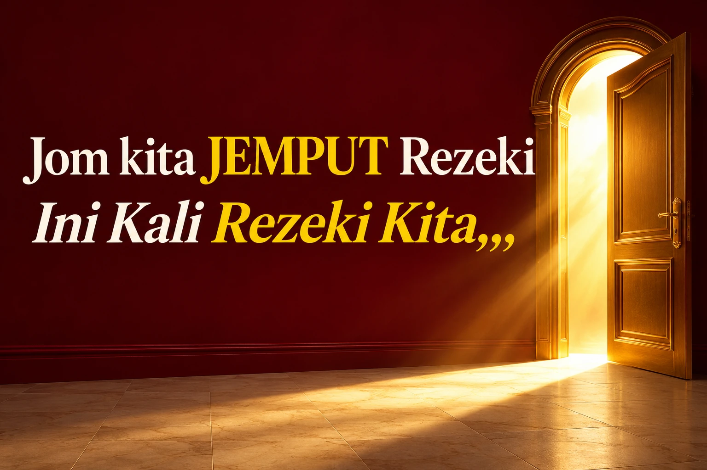
4) SIAPAKAH PENCIPTA $IMP$
$IMP$ Telah Dicipta Oleh Seorang Pakar Perunding Perniagaan Daripada Syarikat
MIZAKI MANAGEMENT SERVICES
(MIZAKI) (KT0333491-W)
Iaitu Sebuah
FIRMA PERUNDING PERNIAGAAN
Yang Sah Dan Berdaftar Dengan SSM Sejak 2013. Ia Adalah Ahli
KUMPULAN SYARIKAT MIZAKI (KSM)
1) MIZAKI MANAGEMENT SERVICES
2) DYAN MANAGEMENT & CONSULTING
3) HOLISTIC MASTER DEALER
4) HYPER CREATIVE ADVERTISING
5) HOLLYGOLD ONE STOP AUTO
PEJABAT PAKAR $IMP$
Terletak Di Kota Bharu, Kelantan. Namun Akibat Kovid 19 Dan PKP Pada Tahun 2020 & 2021,
Segala Urusan Selepas Itu Dijalankan Melalui Atas Talian Hinggalah Ke Hari Ini.
PROSES MENCIPTA $IMP$
Beliau Telah Berpenat Lelah Bersusah Payah Siang Dan Malam Serta Telah Menghadapi Berbagai Dugaan Selama
LEBIH 15 TAHUN
Semenjak 2010 Untuk Mencipta & Menyiapkan $IMP$.
KOS PROJEK
Sepanjang Tempoh 15 Tahun Tersebut, Beliau Telah Membelanjakan
LEBIH RM3 JUTA
Wang Hasil Jualan Resort Milik Beliau Di Pulau Perhentian Tanpa Membuat Sebarang Pinjaman Bank. Bahkan Beliau Terpaksa
MENJUAL BEBERAPA EKAR TANAH
Milik Beliau Untuk Menampung Kos Operasi & Menyara Keluarga Besar Beliau Sepanjang Tempoh Tersebut.
Ini Adalah Kerana Projek Belum Siap Dan Tidak Ada Sumber Pendapatan Lain. Akhirnya
$IMP$
Siap Dicipta Secara Semi Auto Pada Bulan Nov. 2025.
Ia Bersedia Untuk Di Lancarkan Pada Awal Tahun 2026.
$IMP$
Yang Beroperasi Secara Automatik Sepenuhnya Dijangka Siap Pada Pertengahan Tahun 2026. Disamping
$IMP$
Dalam Masa Yang Sama Beliau Juga Telah Berjaya Menginovasikan
HARTA INTELEK MAYA
Daripada Industri Teknologi Maklumat Menjadi Suatu
ASET BERNILAI TINGGI (ABT)
Yang Jauh Lebih Baik Daripada Jongkong Emas, Bitcoin Dan Lain-Lain Lagi.
Berbekalkan Ilmu Dan Pengalaman Beliau
LEBIH 50 TAHUN
Dalam Bidang Pengurusan & Perniagaan, InsyaAllah
$IMP$ DAN ABT
Akan Bergerak Selari Memenuhi Permintaan Orang Ramai Di Seluruh Malaysia.
Kemudian Akan Beliau Sebarkan Pula Keseluruh Dunia, InsyaAllah.
PENGALAMAN KERJA BELIAU
1) Pegawai MARA Daerah, Kuala Lipis, Pahang.
2) Business Development Executive, Sri Dina Sdn Bhd., Selangor.
3) Personnel Services Dept., Shell Malaysia Trading, Kuala Lumpur.
4) Branch Manager, SRS Associates Sdn Bhd., Kota Bharu, Kelantan.
5) Managing Director, Mizaki Management Services Sdn. Bhd. Kota Bharu, Kelantan.
6) CEO, FGT Holding Berhad, Kota Bharu, Kelantan.
7) Pengasas, Pencipta & Pakar $IMP$, Kumpulan Syarikat Mizaki (KSM), Kota Bharu, Kelantan.
BELIAU ADALAH::
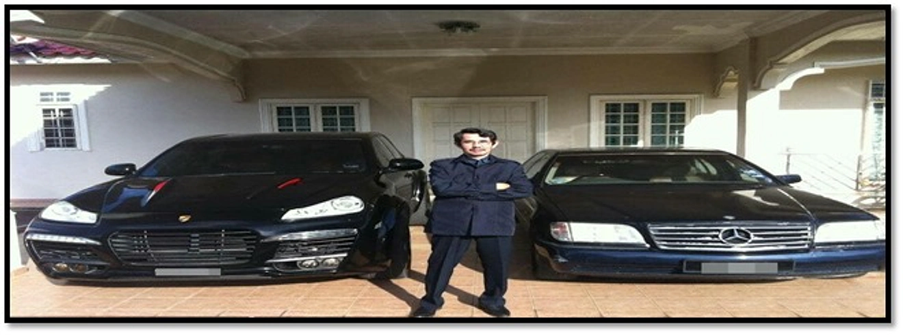
MOHD. ZAKI ABDULLAH
Beliau Dibantu Oleh
7 Orang Anak Beliau
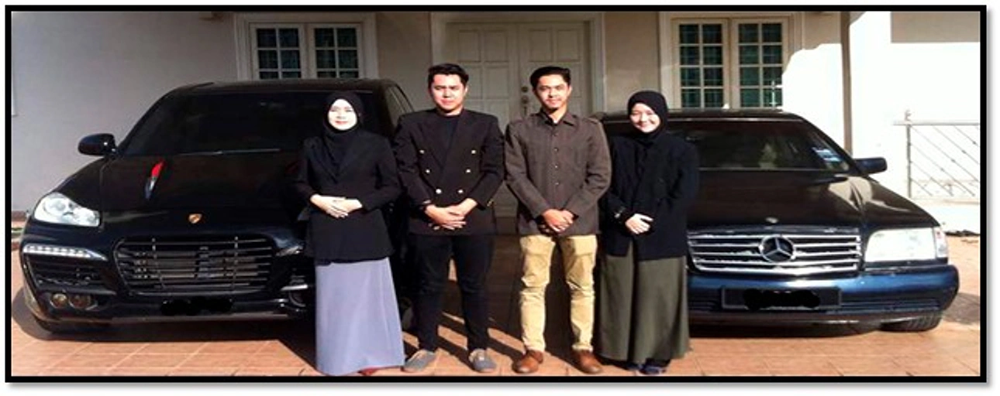
1)
. DIYANA - BBA (RETAIL MGT.) (UITM), DBS (UITM).
3) . ZAHIR - DIP. IN ARCHITECTURE (KKTM).
4) . IZZATI - BACHELOR OF SYARIAH WITH LAW (KUIS).
DAN
1)
IZZAT – STAM (MTM)
3) IWAN – DIP. TEKNOLOGI MAKLUMAT (KVB)
Serta Beberapa Orang Pegawai / Kakitangan Lain
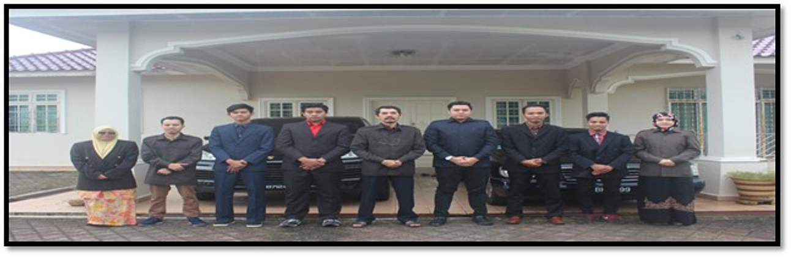
Jadi, Berkawanlah Dan Dapatkan Khidmat Nasihat Daripada Beliau Jika Anda Ingin Cepat Berjaya Sebagaimana Yang Dinyatakan Oleh Dr Azizan!
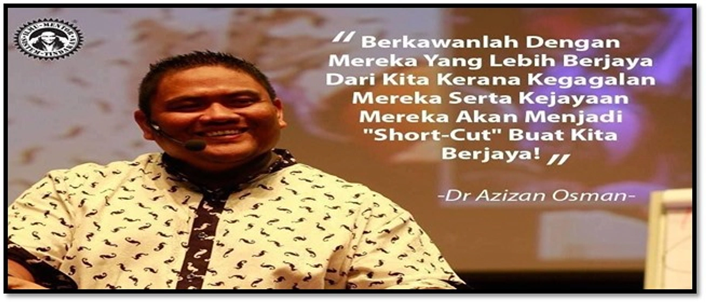
===========================
PENGHARGAAN
Kepada Mahaguru-Mahaguru Yang Telah Menjadi Sumber Inspirasi & Pemberi Semangat Kepada Pakar $IMP$ Untuk Terus Berjuang & Berjihad Bisnes.
Setinggi-Tinggi Penghargaan & Jutaan Terima Kasih Pakar $IMP$ Ucapkan Kepada Semua
MAHAGURU-MAHAGURU
Dimana Jua Mereka Berada.
Kepada Mereka Yang Telah Tiada, Pakar SIMP$ Doakan Semoga Allah S.W.T Cucuri Rahmat & Tempatkan Roh Mereka Dikalangan Orang-Orang Yang Beriman & Beramal Soleh. Amin!
TAN SRI MUHAMMAD ALI HASHIM
Allahyarham Adalah Mantan Pengerusi Johor Corporation Yang Sangat Terkenal Satu Masa Dahulu.
Selama 3 Bulan Pakar $IMP$ Menghadiri Kursus Khas Untuk Pengarah-Pengarah Syarikat di Johor Baru Yang Dianjurkan Oleh Beliau.
Beliau Telah Memberi Panduan Halatuju Perjuangan Usahawan Muslim Yang Sebenar, Iaitu
“JIHAD BISNES”
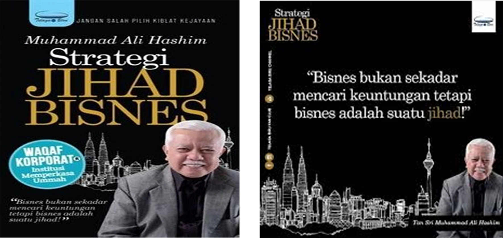
PROF. NIK ABDUL RASHID NIK ABDUL MAJID
Allahyarham “PAK NIK“ Adalah Mantan Pengarah ITM (UITM) Yang Sangat Dihormati.
Beliau Telah Memberi Ucapan Semasa Merasmikan Kursus Usahawan MEDEC Selama 3 Bulan Di ITM 1984 Yang Disertai Oleh Pakar $IMP$.
Ucapan Beliau Telah Memberi Sumber Inspirasi Yang Sangat Bermakna Kepada Pakar $IMP$ Hingga Ke Hari Ini.
“CIPTALAH SESUATU PRODUK ATAU PERKHIDMATAN YANG ORANG LAIN BELUM BUAT”
Itulah Yang Dilakukan Oleh Pakar $IMP$ Sekarang.
PROF. DATUK DR. ADNAN ALIAS
Adalah Mantan Pengetua ITM (UITM Caw. Terengganu) Dan Pensyarah Kepada Pakar $IMP$.
Beliau Telah Mengakui, Menaikkan Martabat & Semangat Usahawan Bahawa Hanya Usahawan Mempunyai 6 Atau 7 “Sense” & Beliau Tidak Memilikinya Walaupun Beliau Berkelulusan Tinggi.
*BERANI BERNIAGA / BERANI REBUT PELUANG
*MAMPU MENGHIDU / CIPTA PELUANG PERNIAGAAN
Itulah Yang Dimiliki Oleh Pakar $IMP$ & Semua Usahawan Lain.
KHAIRUL NIZAM DATO’ MUKHTAR
Nizzura Training Centre
Pakar $IMP$ Telah Sertai Satu Kursus Berkaitan Teknologi Maklumat Anjuran Nizzura Pada 2010 Dengan Bayaran RM500 Satu Hari.
Coach Nizzura, Tanpa Disedari Oleh Beliau Telah Memberi Jawapan Kepada Persoalan Yang Telah Lama Bermain Di Dalam Fikiran Pakar $IMP$.
“BENDA APAKAH JAUH LEBIH BAIK, BERNILAI JAUH LEBIH TINGGI & DAPAT MENGGANTIKAN JONGKONG EMAS”
Jawapan Beliau Tersebutlah Yang Telah Mencetuskan Ilham Kepada Pakar $IMP$ Untuk Menginovasi
HOLLYGOLD®
Domain (ABT) Dan Kemudian Mencipta SIMP$.
Selepas 15 Tahun, Kedua-Duanya Sekarang Telah Sedia Untuk Dipasarkan & Disebarkan Ke Seluruh Malaysia. InsyaAllah, Kemudian Nanti Keseluruh Dunia.
DATUK WIRA DR AZIZAN OSMAN
Richworks Group Of Companies
Pada Tahun 2010, Pakar $IMP$ Telah Sertai Seminar Marketing Anjuran Beliau Disebuah Hotel Di Kuala Lumpur Selama 3 Hari 2 Malam Dengan Bayaran Sebanyak RM6,300.
Banyak Perkara Yang Telah Dipelajari & Salah Satu Adalah Tentang Betapa Pentingnya Bagi Usahawan Untuk Mendapat Seorang
MENTOR
Sebab Itulah Anda Disarankan Untuk Menjadi Ahli Kumpulan Eksklusif Pakar $IMP$ (KEP$) Bagi Membolehkan Anda Mendapat Khidmat Nasihat Daripada
MENTOR
(Pakar $IMP$)
Anda Akan Lebih Cepat Berjaya & Lebih Untung Dunia Akhirat.
Tanpa Perlu Hadir Seminar, Berhari-Hari Meluangkan Masa Memerah Otak Berpuluh-Puluh Jam Yang Anda Kena Bayar Sendiri Yuran Seminar Beribu Ringgit.
Tak Perlu Keluar Modal Niaga Beratus Ribu Ringgit, Pening Kepala Mengurus Projek, Setiap Hari Sibuk Kesana Kemari.
Sedangkan Hasilnya Belum Pasti & Tak Dapat Dinyatakan Dengan Lebih Jelas & Lebih Pasti Pada Masa Sekarang Sebagaimana Perniagaan
JUAL BELI & SEWA ABT
Daftar Segera Sebagai Ahli KEP$ & Scan/Rancang Pendapatan Anda Hari Ini, Sekarang Juga!
5) “RAHSIA” LEBIH 20 MANFAAT BESAR
InsyaAllah.
Anda Juga Dapat Ketahui “RAHSIA” Bagaimana Cara:
1) WANG TIDAK HABIS SAMPAI BILA-BILA.
Wang Simpanan / Wang KWSP / Wang Hadiah Pencen Anda InsyaAllah Dijamin Pasti Tidak Habis Sampai Bila-bila. Walaupun Diambil Setiap Bulan Bahkan Makin Bertambah.
(Kebiasaan Wang Akan Habis Dalam Masa 3 Tahun Sahaja).
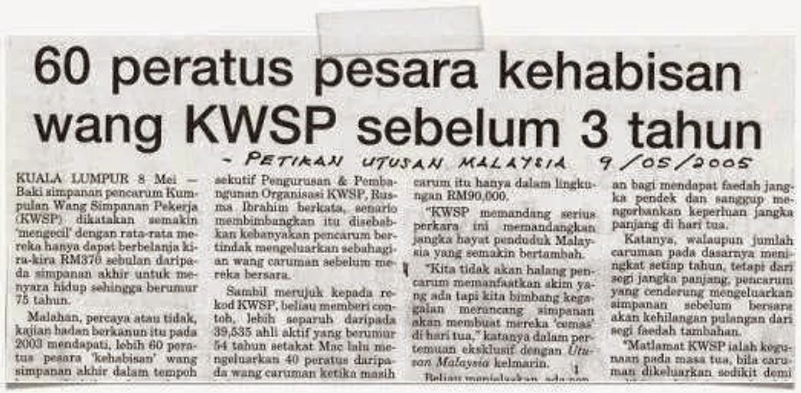
2) DAPAT MILIKI WANG SIMPANAN / ASET BERNILAI TINGGI (ABT)
Sehingga Lebih RM350,000 Dalam Masa Hanya Diantara 1 Tahun Hingga 15 Tahun Sahaja.
Walaupun Pendapatan / Pencen Anda Kurang Daripada RM1,500 Dan Mampu Menabung Hanya RM100 Sahaja Sebulan.
Sedangkan Menabung Di Dalam BASK Dengan Jumlah Yang Sama RM100/Bulan Akan Menggambil Masa 50 Tahun Baru Dapat RM350,000.
3) DAPAT PENCEN / PENCEN KE 2
Boleh Dapat Lebih RM7,000/Bln “Pencen” Walaupun Anda Pekerja Swasta / Bekerja Sendiri, Petani / Nelayan, Suri Rumah / Ibu Tunggal, Pesara Dll.
Bagi Kakitangan / Pesara Kerajaan. Dapat “Pencen Ke 2” Lebih RM7,000/Bulan.
4) KEMBALIKAN SEMULA WANG YANG TELAH HABIS
Wang Simpanan / Wang KWSP / Wang Hadiah Pencen Yang Telah Habis Anda Belanjakan Dapat Dikembalikan Semula Dengan Menggunakan Baki Wang Anda Yang Masih Ada.
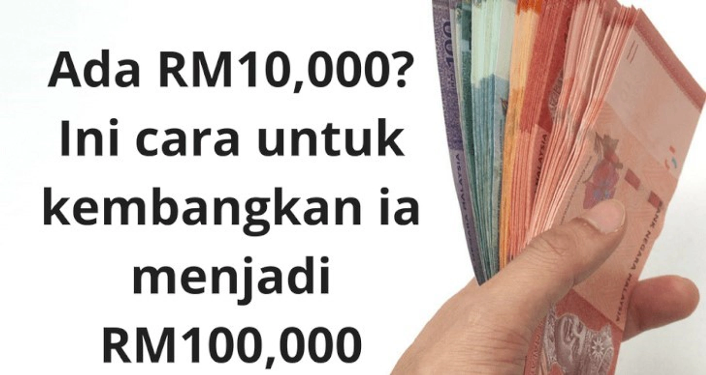
5) DAPAT MERANCANG DENGAN LEBIH MUDAH.
Berpandukan Kepada Penyata Laporan Scan Pendapatan Yang Dikeluarkan PAKAR $IMP$ Dapat Membantu Anda Merancang Pendapatan Dengan Lebih Mudah & Lebih Baik.
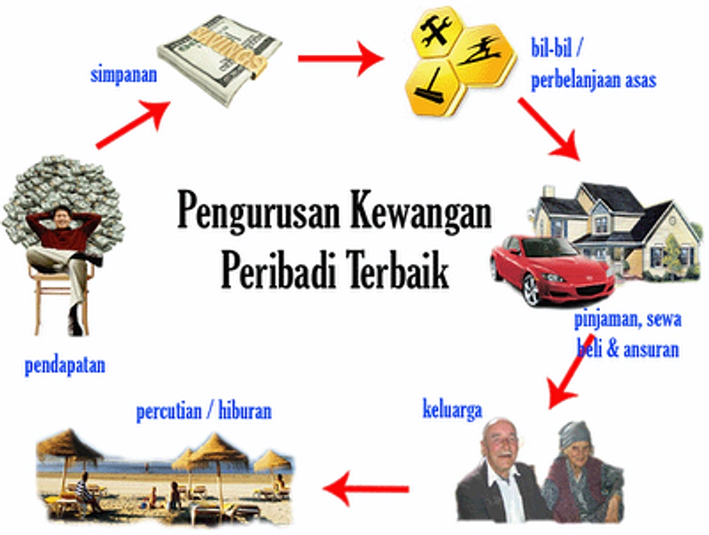
6) TINGGALKAN ABT KEPADA WARIS.
Selepas Anda Sudah Tiada Dapat Tinggalkan Aset Bernilai Tinggi (ABT) Yang Memberi Hasil Sewa / Pencen Kepada Waris Sehingga Lebih RM7,000 Setiap Bulan Sampai Bila-Bila.
Setiap Tahun Jumlah ABT Semakin Bertambah Dan Nilainya Semakin Meningkat.
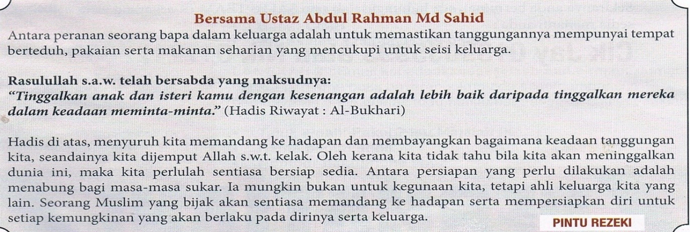
7) PAHALA JIHAD BISNES & PAHALA AMAL JARIAH.
Secara Tidak Sedar Dan Tanpa Melakukan Apa-Apa Secara Langsung, Anda Mendapat Pahala Jihad Bisnes & Pahala Amal Jariah Yang Besar Dan Berterusan Semasa Anda Masih Hidup Hinggalah Selepas Anda Sudah Tiada.
Anda Hanya Perlu Berniat Dengan Ikhlas Kerana Allah S.W.T Untuk Berjihad Bisness & Beramal Jariah Bersama Kumpulan Syarikat Mizaki (KSM).
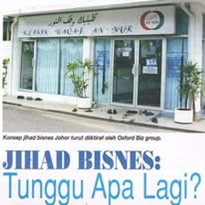
8) TUKARKAN FAEDAH / DIVIDEN KEPADA UNTUNG NIAGA.
Faedah / Dividen Daripada Bank, Amanah Saham, Koperasi (BASK) Yang Syubhah / Riba Kepada Untung Daripada Perniagaan Jual Beli & Sewa ABT Yang Sah, Halal Tanpa Riba & Patuh Syariah.
9) TUKARKAN FAEDAH/DIVIDEN 5% KEPADA LEBIH KURANG 35% SETAHUN
Faedah / Dividen Yang sangat Sedikit Diperolehi Daripada BASK Dengan Kadar Purata Hanya Sekitar 5% Sahaja Setahun Ditukarkan Kepada Lebih Kurang 35% Setahun (7 X Ganda Lebih Banyak) .
10) TUKARKAN HASIL SELEPAS SETAHUN KEPADA SETIAP BULAN.
Tukarkan Faedah / Dividen Daripada BASK Yang Dapat Hanya Selepas Setahun Disimpan, Kepada Dapat Untung Setiap Bulan Daripada Hasil Sewa ABT.
11) UNTUNG DAPAT DIKUMPUL & DITAMBAHKAN 12 X SETAHUN.
Berbanding Melalui BASK, Modal Yang Disimpan Dan Faedah Yang Diperolehi Selepas Setahun Hanya Boleh Dikumpul & Digandakan Sekali Sahaja Selepas Setahun.
Melalui $IMP$ & ABT, Hasil Sewa Diperolehi Setiap Bulan. Modal Dicampur Hasil Sewa Pertama Tersebut Untuk Hasilkan Untung Yang Baru Dibulan Berikutnya.
Begitulah Seterusnya Setiap Bulan Hingga Ke Akhir Tahun Dan Disambung Lagi Ke Tahun Seterusnya.
Ini Menyebabkan Hasil Yang Diperolehi Berlipat Kali Ganda Berbanding Faedah/Dividen Melalui BASK.
12) KUMPUL WANG BELANJA KAHWIN LEBIH CEPAT.
Dapat Kumpul Wang Belanja Untuk Kahwin Lebih Cepat Berbulan Atau Bertahun Berbanding Kaedah Biasa.
Contoh: Belanja Kahwin Perlu RM30,000 Sedangkan Wang Simpanan Cuma Ada RM10,000 Sahaja.
Jika RM10,000 Tersebut Disimpan Mengikut Kaedah Biasa Di Dalam BASK Dengan Ditambah Pula Simpanan RM500 Setiap Bulan, Akan Ambil Masa 3 Tahun (36 Bulan) Baru Dapat Kumpul RM30,000.
Tetapi Melalui Khidmat Pakar SIMP$, Jika RM10,000 Tersebut Dengan Ditambah RM500 Setiap Bulan, Wang RM30,000 Dapat Dikumpul Dalam Masa Hanya
1 Tahun 9 Bulan Sahaja. Lebih Cepat 1 Tahun 3 Bulan (15 Bulan).
13) PERGI UMRAH / MELANCONG KELUAR NEGARA SETIAP TAHUN
Tetapi Wang Simpanan Tak Habis Bahkan Makin Bertambah.
14) BELI KENDERAAN SECARA TUNAI.
Tetapi Wang Simpanan Tak Habis Bahkan Makin Bertambah.
15) BELIAN SECARA TUNAI TETAPI WANG SIMPANAN TAK HABIS.
Ubahsuai Rumah, Beli Barang Kemas, Beli Perabut Dll Secara Tunai Tetapi Wang Simpanan Tak Habis Bahkan Makin Bertambah.
16) BAYAR HUTANG LEBIH CEPAT 1 TAHUN HINGGA LEBIH 10 TAHUN.
Bayar Hutang Rumah, Kenderaan, PTPTN Dan Lain-lain Lebih Cepat
1 Tahun Hingga Lebih 10 Tahun Berbanding Kaedah Biasa.
17) DAPAT MILIKI WANG SIMPANAN RM350,000.
Dalam Masa Diantara 1 Tahun Hingga Maksima 15 Tahun Sahaja Dengan Menabung Minima Hanya RM100 Sahaja Sebulan.
18) DAPAT MILIKI ABT DALAM MASA YANG SAMA.
Yang Bernilai RM350,000 Dalam Masa Maksima Hanya 15 Tahun Sahaja Dengan Bayaran Secara Ansuran RM100 Sahaja Sebulan. Tak Perlu Pinjaman Bank Dan Wang Deposit.
Sedangkan Jika Ingin Miliki Aset Lain Seperti Rumah, Tanah & Sebagainya Yang Bernilai RM350,000, Perlu Dapatkan Pinjaman Bank & Wang Deposit Min. 10% (RM35,000).
Kemudian Mesti Bayar Ansuran Bulanan Lebih Kurang RM2,000/Bulan Selama 30 Tahun.
19) DAPAT UNTUNG & PAHALA BESAR BERTERUSAN.
Semasa Masih Hidup Dan Selepas Telah Tiada Tanpa Lakukan Usaha Sendiri Dan Tanpa Disedari.
Ini Adalah Kerana Semua Usaha Berkaitan Perniagaan, Bantuan Kemanusiaan & Kebajikan Akan Dilakukan Oleh Yayasan Mizaki Yang Akan Ditubuhkan Dalam Masa Terdekat.
Yang Penting, Pastikan Anda Berniat Ikhlas Kerana Allah S.W.T Untuk Berjihad Bisnes Bersama Kumpulan Syarikat Mizaki (KSM) Hingga Capai Matlamat Yang Telah Ditetapkan.
20) BANTU WUJUDKAN IMPIAN BESAR & MATLAMAT JELAS.
Iaitu Untuk Miliki Wang Simpanan / ABT Lebih Daripada RM350,000 & Pencen Lebih RM7,000.
Dengan lebih Pasti Cara Untuk Mencapainya Yang Mungkin Anda Tidak Pernah Terfikir Sebelum Ini.
21) MEMBERI DORONGAN, SEMANGAT, KEYAKINAN DAN KEBERANIAN
Untuk Lebih Berusaha, Berikhtiar Dan Berjimat Cermat Bagi Mencapai Impian Yang Telah Ditetapkan.
Bagi Orang Biasa Mungkin Agak Mustahil Untuk Dilakukan & Dicapai. Tetapi Bagi Yang Berilmu Dan Banyak Pengalaman Ia Tidak Mustahil Sama Sekali.
Apatah Lagi Dengan Adanya Teknologi Maklumat Serba Canggih Sekarang Ini Serta Dengan Izin Allah S.W.T.
Oleh Itu, Daftar Segera Sebagai Ahli KEP$ Dan Scan / Rancang Pendapatan Anda Hari Ini, SEKARANG JUGA!!
6) MANA SATU PILIHAN ANDA
1). SAYANGKAN RM50!!
Adakah Anda Masih Mahu Gunakan Kaedah Lama Iaitu Simpan Wang Dalam BASK?.
Tak Rancang, Jimat & Tambah Pendapatan Dalam Satu Masa.
Akhirnya Wang Anda Berpuluh Beratus Ribu Akan Habis Semuanya.
Diistihar Muflis,
Dihina, Miskin Sebelum & Selepas Bersara.
Merempat, Mengemis Dan Dibuang Ke Rumah Orang Tua.
“HIDUP PENUH DERITA DAN KECEWA HINGGA KE AKHIR HAYAT”.
Di Alam Barzah Pula, Tidak Ada Pahala Jihad Bisnes & Pahala Amal Jariah Yang Mengalir Sepanjang Masa Kepada Roh Anda.
ATAU
2). JADI AHLI KEP$
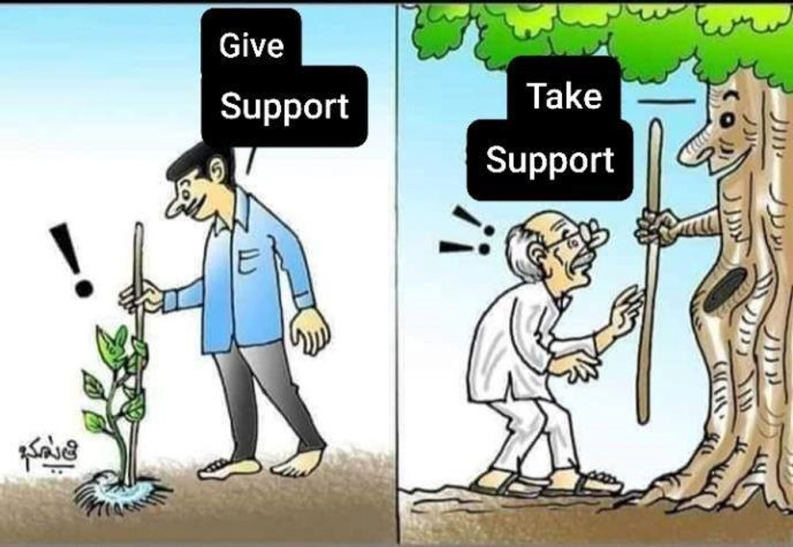
Scan / Rancang Pendapatan Hanya RM50 / Scan.
InsyaAllah Masalah Perancangan Pendapatan Anda Dari 1 Tahun Hingga 35 Tahun Dapat Dilakukan Dengan Lebih Mudah, Lebih Cepat Dan Lebih Murah.
Dalam Masa Yang Sama Dapat Jimatkan Dan Tambahkan Pendapatan Anda Berpuluh Hingga Beratus Ribu Ringgit.
Seterusnya Dapat Capai Impian Untuk Miliki Wang Simpanan / ABT Berjumlah Lebih
RM350,000
Serta Dapat Ketahui “RAHSIA” & Nikmati Lebih 20 Manfaat Besar Yang Lain Termasuklah Mendapat
“PENCEN / PENCEN KE 2”
LEBIH RM7,000
Setiap Bulan Hingga Ke Akhir Hayat.
Dapat Elakkan Diri Daripada Muflis, Miskin Sebelun & Selepas Bersara, Seterusnya…
“ANDA BOLEH BERSARA DENGAN SENANG DAN TENANG”.
TETAPI INGAT!!
1). Proses SCAN / Perancangan Pendapatan Dilakukan Mengikut Giliran Berdasarkan Kepada..
“FIRST COME FIRST SERVE”.
Jika Lambat Daftar, Anda Terpaksa Tunggu Giliran Yang Lama, Mungkin
1 BULAN HINGGA 6 BULAN LAGI.
2). Semakin Lambat Anda Bertindak Semakin Bertambah Masalah Anda Akan Hadapi. Wang Simpanan Semakin Habis, Fikiran Semakin Kusut & Hidup Anda Bertambah Stress.
3). Bila Wang Simpanan / Wang KWSP / Wang Hadiah Pencen Sudah Habis, Menangis Air Mata Darah Sekalipun Wang Tersebut Tidak Akan Kembali Lagi.
SESAL DAHULU PENDAPATAN SESAL KEMUDIAN TIDAK BERGUNA!!
Jalan Penyelesaian Terbaik Melalui Pakar $IMP$ Sudah Tersedia. Jangan Lepaskan Peluang Ini.
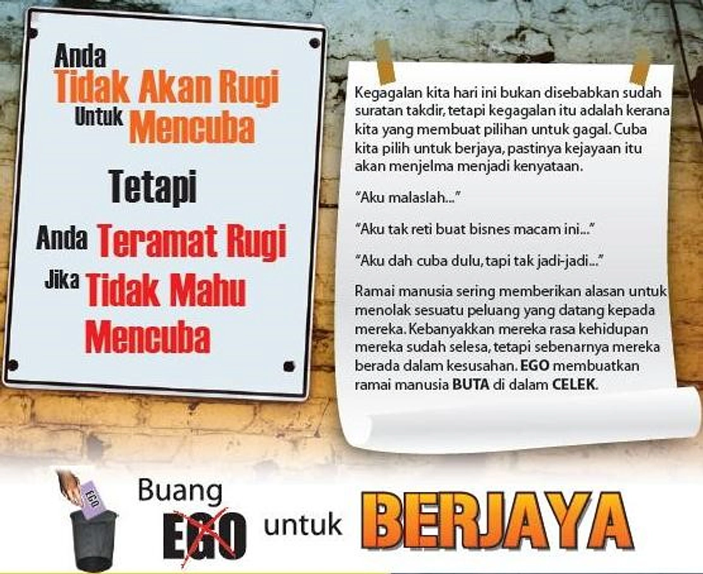
ELAKAN DIRI ANDA & KELUARGA ANDA DARIPADA MUFLIS, MISKIN SEBELUM & SELEPAS BERSARA!
Bertindak Segera Sebelum Terlambat. Daftar Sebagai Ahli KEP$ & Scan / Rancang Pendapatan Anda Hari Ini, Sekarang Juga!
7) YURAN JAMINAN TESTIMONI
Tidak Ada Yuran Tersembunyi,
Hanya 3 Jenis Yuran Sahaja Iaitu:
1) YURAN PENDAFTARAN / BUKA FILE
PERCUMA!
PERCUMA!
PERCUMA!
(Konsultan Lain RM500)
2) YURAN PAKAR $IMP$
*PERCUMA!
*PERCUMA!
*PERCUMA!
SELAMA 3 TAHUN
(Yuran Konsultan Lain Lebih Kurang RM1,000 / Bln. @ RM12,000 Setahun)
* Yuran Pakar SIMP$ Dikecualikan Bagi Sesiapa Yang Berpendapatan / Gaji Kasar Tidak Lebih Daripada
RM5,000 / Bulan
Atau Miliki Wang Simpanan Tidak Lebih Daripada
RM30,000.
Bagi Yang Lain Yuran Perkhidmatan Hanya Diantara
1% HINGGA 10% SAHAJA
Daripada Untung Kasar Setahun.
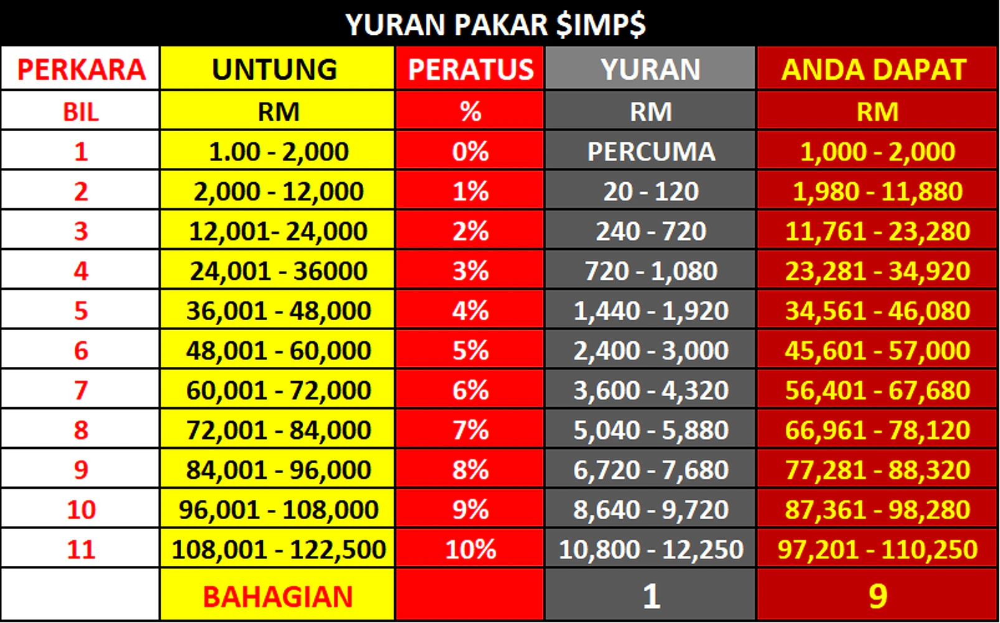
CONTOH: BIL. 5
Anda Dapat Untung Kasar RM48,000 Kadar Yuran Pakar $IMP$ : 4%
Yuran Perlu Dibayar: RM48,000 X 4% = RM1,920
Untung Bersih: RM48,000 – RM1920 = RM46,080
Pakar $IMP$ Dapat RM1,920 (4%)
Anda Dapat RM46,080 (96%)
Pakar $IMP$ Buat Semua Kerja Dapat Hanya RM1,920 (4%)
Anda Pantau Dari Rumah Sahaja Dapat RM46,080 (96%)
INI TIDAK ADIL!!
PAKAR $IMP$ Tidak Adil, Bagi Untung Lebih Kepada Anda!
Anda Tak Perlu Keluar Wang Poket Sendiri, Yuran Akan Dipotong Daripada Keuntungan.
Yuran Perlu Di Bayar Hanya Selepas Setahun
TAK UNTUNG TAK PAYAH BAYAR YURAN.
Yuran Juga Tidak Perlu Dibayar Jika Anda Tidak Dapat Untung Sekurang-Kurangnya
50%
Daripada Anggaran Pendapatan Yang Dibuat Perancangan Oleh
Pakar $IMP$.
3) UPAH SCAN / RANCANG PENDAPATAN
Yang Anda Perlu Bayar Hanyalah
RM50 SAHAJA / SCAN.
===============================
KENAPA PAKAR $IMP$
BAGI YURAN
PERCUMA
Untuk Menggalakkan Lebih Ramai Rakyat Malaysia Menjadi Ahli
KEP$
Dan Tidak Terlepas Peluang Untuk Mendapat Banyak Manfaat Besar Daripadanya.
Serta Dapat Mengelak Dan Mencegah Lebih Ramai Rakyat Malaysia Daripada Muflis, Miskin Sebelum & Selepas Bersara.
Tambahan Pula Pakar $IMP$, InsyaAllah Tidak Akan Rugi Apa-apa.
Jumlah Prospek / Pekerja Seluruh Malaysia
15 JUTA ORANG
Jika Hanya
1 JUTA (7%)
Orang Sahaja SCAN Pendapatan, Pakar $IMP$ Sudah Dapat
RM50 JUTA
Setiap Tahun. Modal Asal Pakar $IMP$ Keluarkan Sekali Sahaja, Hanya
RM3 JUTA
Kos Operasi Tahun Pertama Hanya RM2 Juta. Jumlah Kos
RM5 JUTA
Untung Kasar Tahun Pertama
RM45 JUTA
Jumlah Modal & Kos: RM5 Juta, Dapat Hasil RM50 Juta
10 X Ganda (1,000%).
Tahun Ke 2 Dan Tahun Seterusnya Dapat
RM50 JUTA
Setiap Tahun.
Kos Operasi Hanya
RM2 JUTA
Setahun
UNTUNG
RM48 JUTA
Jumlah Tersebut Adalah Hasil Daripada Scan Sekali Sahaja Setahun.
Belum Termasuk Hasil Jualan ABT & Hasil Daripada Scan Setiap Bulan,
Oleh Sesiapa Yang Berpendapatan Lebih RM5,000 Sebulan Atau Miliki Wang Simpanan Lebih RM30,000.
Keuntungan Yang Diperolehi Akan Dipulang Semula Kepada Ahli KEP$ Dalam Bentuk
“PENCEN / PENCEN KE 2"
Dan Berbagai Manfaat & Sumbangan Kebajikan Lain Dari Semasa Ke Semasa Melalui YAYASAN MIZAKI Yang Akan Di Tubuhkan Dalam Masa Terdekat. Pastikan Anda Daftar Segera Sebagai Ahli KEP$ & SCAN PENDAPATAN Hari Ini, Sekarang Juga Sebelum Kuota Sudah Penuh! JANGAN TERLAMBAT! ============================== Pakar $IMP$ Bersedia Beri JAMINAN Wang Yang Telah Anda Bayar Dikembalikan 3 X GANDA (300%). Jika Pakar $IMP$ Gagal Scan/Rancang Pendapatan Anda Dari 1 Tahun Hingga 35 Tahun Dalam Masa 3 BULAN Daripada Tarikh Pakar $IMP$ Terima Bayaran. Jadi, Dengan Adanya Jaminan 3 X GANDA Tersebut Anda Tidak Akan Rugi Dan Tidak Perlu Bimbang lagi. Tidak Ada Sebab Lagi Untuk Anda Tidak Merebut Peluang Yang Sangat Baik Ini!! ============================== Anda Yang Berusaha, Berpenat Lelah Siang Dan Malam Tetapi Orang Lain Yang Kaya Kerana Hasil Anda
“DIAMBIL KESEMPATAN”
Oleh Orang Lain, Tanpa Anda Sedari. Contoh: Jika Anda Menyimpan RM100 / BULAN Di Dalam Bank, Amanah Saham Atau Koperasi (BASK) Anda Hanya Diberi Faedah/Dividen PURATA 5% SAHAJA Selepas Setahun. Ini Menyebabkan Anda Mengambil Masa Lebih Kurang 50 TAHUN Baru Boleh Dapat
RM350,000.
Wang Anda “DIAMBIL KESEMPATAN” Begitu Lama. Sedangkan Mereka
Mendapat Keuntungan BERBILLION Setiap Tahun. Tetapi Dengan Khidmat PAKAR SIMP$ InsyaAllah, Wang sebanyak RM350,000 Tersebut Dapat Dicapai Dalam Masa Hanya Diantara 1 TAHUN HINGGA 15 TAHUN SAHAJA. Lebih Cepat 35 TAHUN Berbanding Dengan BASK. Dalam Masa Yang Sama Anda Juga Dapat Miliki ABT Yang Dapat Memberi “PENCEN / PENCEN KE 2” Sehingga LEBIH RM7,000 SEBULAN Sampai Bila-Bila Selagi Anda Tidak Jual Kesemua ABT Anda. 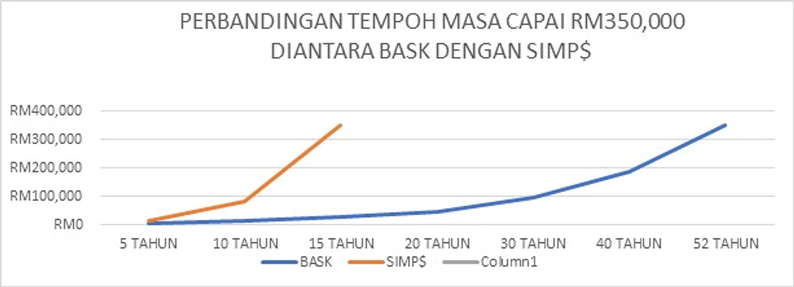
Daripada Gambar Rajah Di Atas Dapat Dilihat Bahawa Simpanan
Melalui BASK Mengambil Masa
50 Tahun
Untuk Mencapai
RM350,000
Sedangkan Melalui
$IMP$
Hanya
15 Tahun Sahaja
Lebih Cepat
35 Tahun
Berbanding BASK.
MANA SATU PILIHAN ANDA?
============================== Berikut Adalah Sebahagian Daripada Pelanggan Yang Telah Mendaftar Menjadi Ahli KEP$ Dan Mendapat Geran Hak Milik ABT. 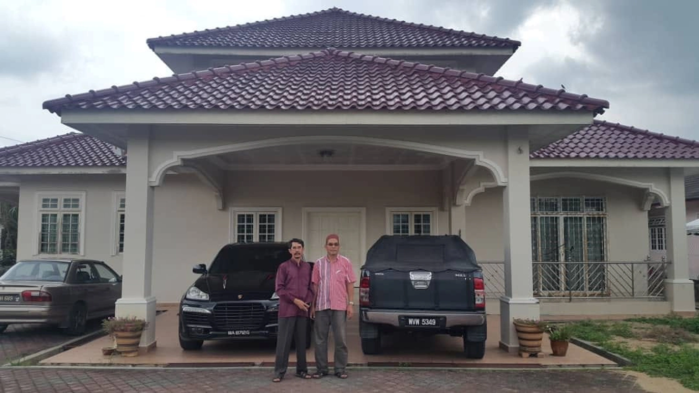 Tuan Haji Nasrun Bin Harun, 63 Tahun, Pengusaha Kilang Air Kordial, Sri Kembangan, Selangor Bersama Dengan Pakar $IMP$ Di Hadapan Pejabat Urusan MIZAKI. 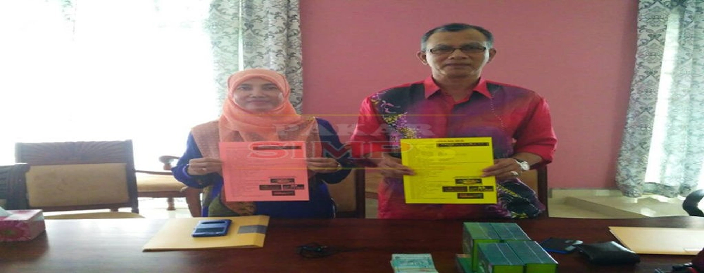 Encik Che Hamid Bin Ibrahim, 66 Tahun, Mantan Pegawai RISDA Dan Isteri Puan Solehah Binti Loman, 61 Tahun, Pesara Guru Dari Pasir Mas, Kelantan. 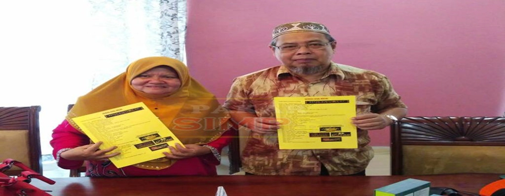 Tuan Haji Muhammad Bin Salleh, 67 Tahun, Dari Machang, Kelantan Adalah Bekas Pegawai Di Syarikat ROHM-WAKO. 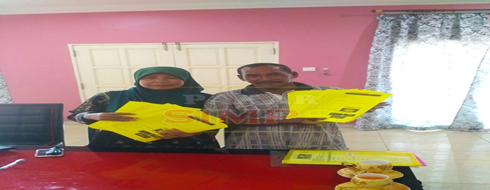 Encik Zarudin Bin Awang, 59 Tahun Dan Isteri, Puan Shaidah Binti Dollah, 63 Tahun, Kontraktor Dari Tumpat, Kelantan. 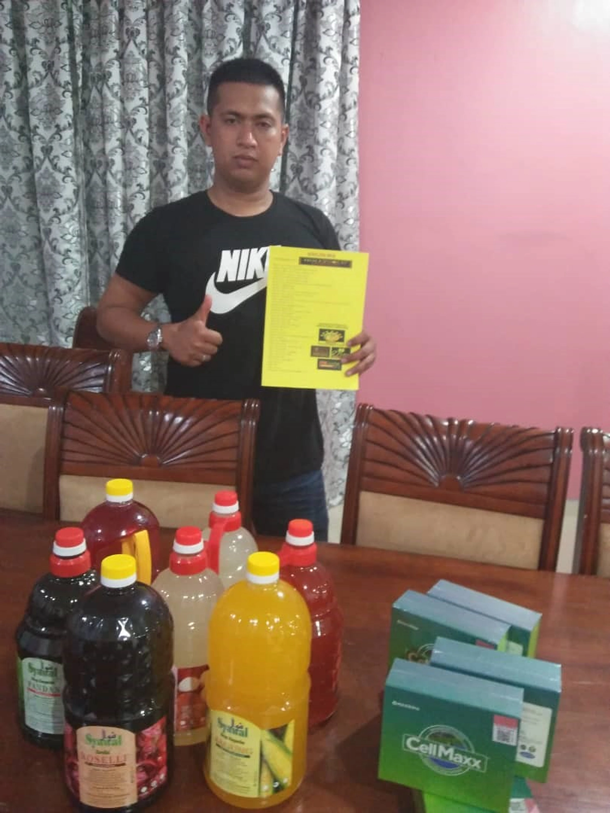 Encik Zulfahmi Bin Ismail, 36 Tahun, Polis Bantuan, Kuala Lipis, Pahang. SESI TAKLIMAT KEPADA PELANGGAN / PESERTA OLEH
PAKAR $IMP$ 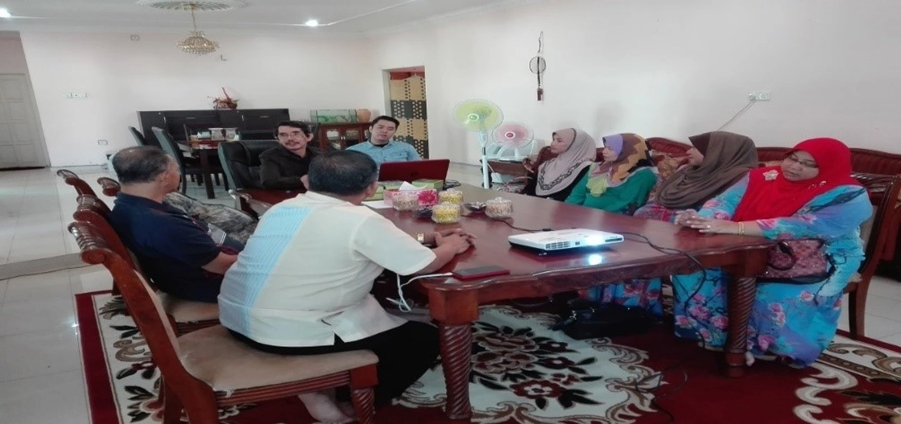 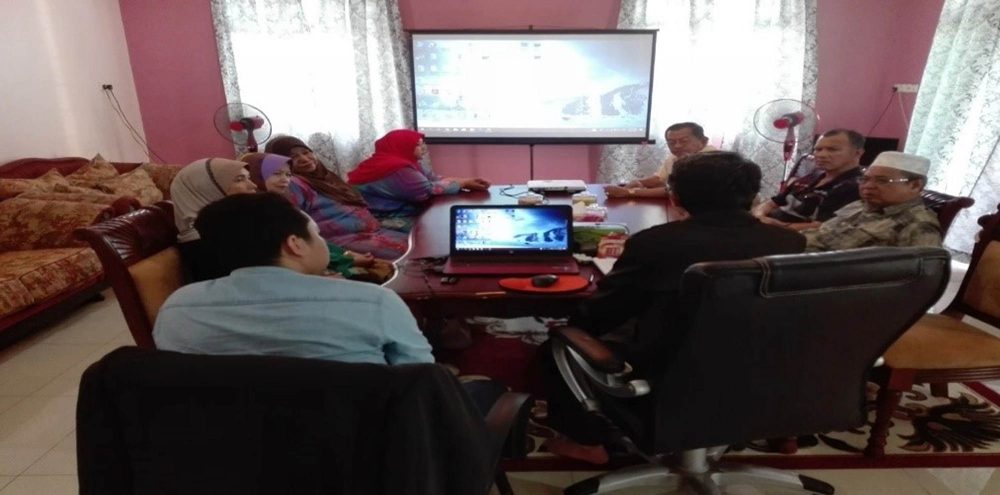 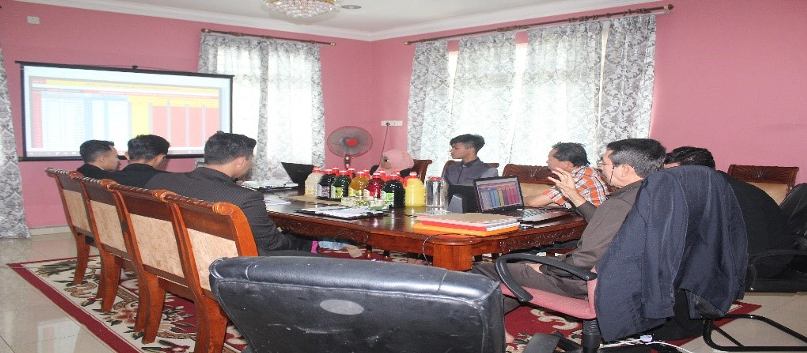 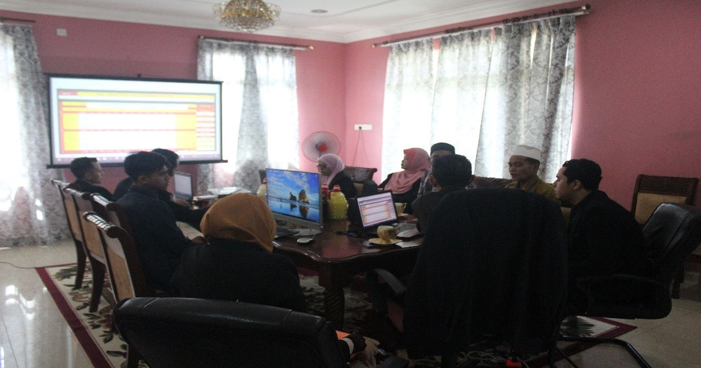 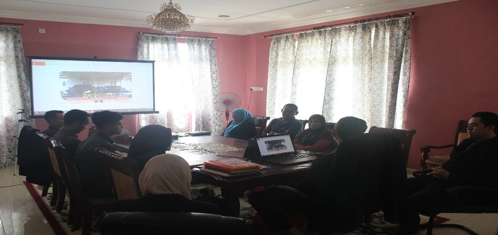 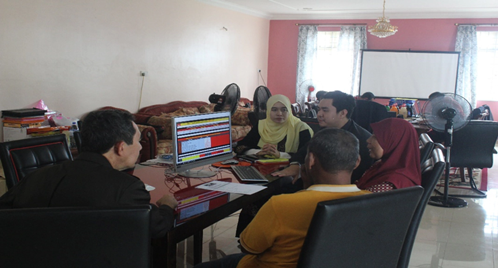
Dan Aktiviti Berkaitan Yang Diadakan
Di
PEJABAT URUSAN MIZAKI
Terletak Di Kota Bharu, Kelantan. Namun Akibat Kovid 19 Dan PKP Pada Tahun 2020 & 2021, Segala Urusan Selepas Itu Dijalankan Melalui Atas Talian Hinggalah Ke Hari Ini. 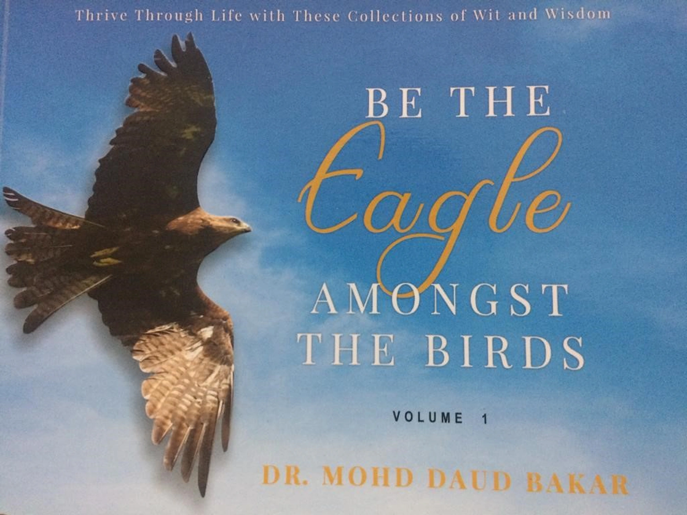 Untuk Sebarang Urusan & Pendaftaran
Sila…JAMINAN
SEDARKAH ANDA
BETAPA RUGINYA ANDA SELAMA INI?
TESTIMONI
8) PERINGATAN
UNTUK RENUNGAN
& TINDAKAN SEGERA!
Inilah Akibatnya Jika Tidak Rancang Pendapatan, Jimat Berbelanja & Tambah Pendapatan Dalam Satu Masa.
LEBIH 1 JUTA ORANG
Miskin Sebelum & Selepas Bersara.
Masih Bekerja Walaupun Usia Sudah Lebih 60 Tahun.
JADI JAGA
KUTIP SAMPAH
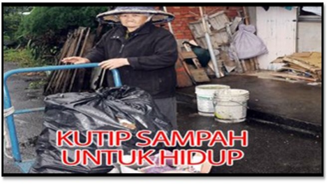
MEREMPAT
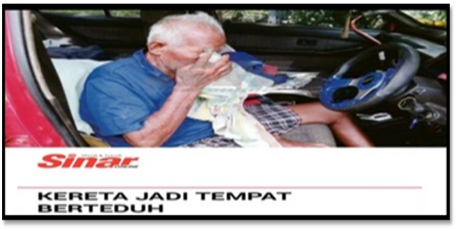
MENGEMIS
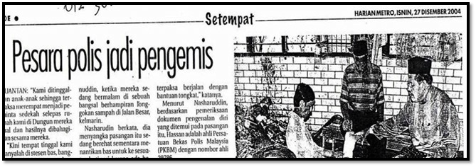
HARAP IHSAN ANAK MENANTU
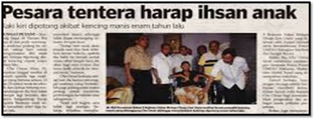
Namun Demikian, Tidak Ramai Yang Bertuah Mendapat Anak Menantu Soleh & Solehah Yang Menjaga & Merawat Kedua Ibu Bapa Dengan Penuh Kasih Sayang Hingga Ke Akhir Hayat.
BAHKAN SEMAKIN RAMAI ANAK YANG DERHAKA
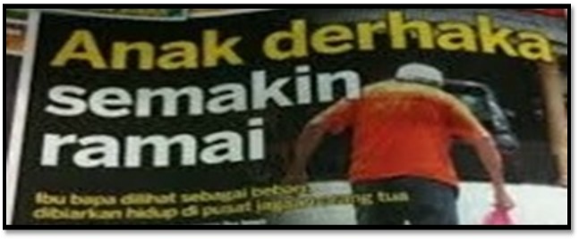
Pesara Ini Sudah Lebih 5 Tahun Tidak Dijenguk Anak Menantu. Beliau Diabai Dan Ditinggalkan Di Hospital
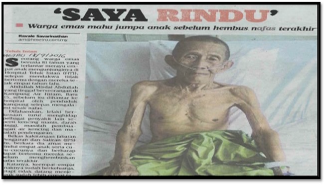
DI HANTAR KE RUMAH ORANG TUA
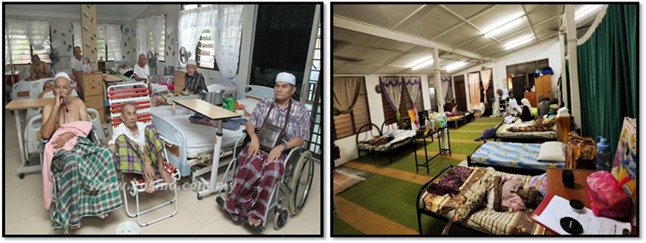
LEBIH MALANG LAGI DIBUANG OLEH ANAK MENANTU SENDIRI
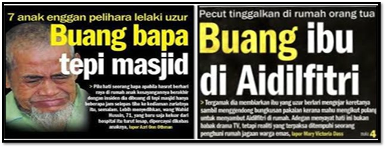
AKHIRNYA HIDUP SENDIRI HINGGA KE PENGHUJUNG USIA
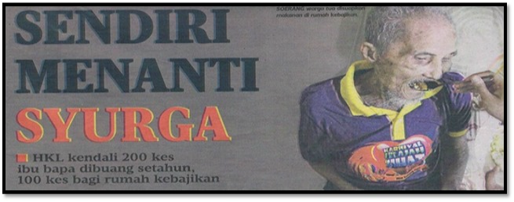
HAMPIR 300,000 ORANG
Diisytihar Muflis Termasuk Orang Muda
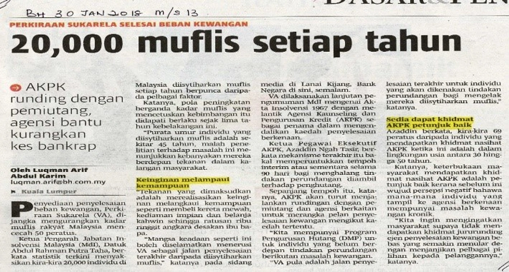
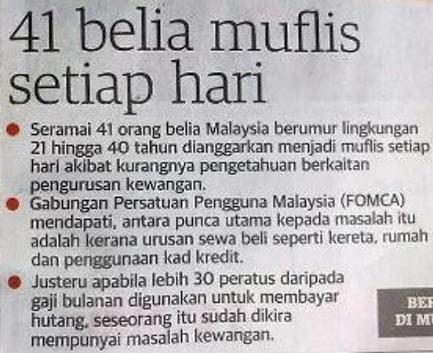
DIANTARA PUNCA MUFLIS
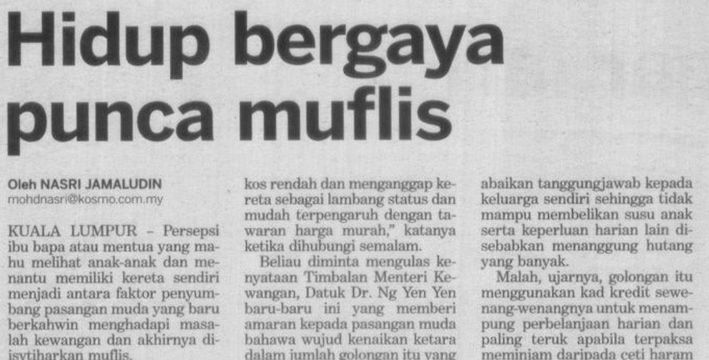
1,142 ORANG
Bunuh Diri Pada Tahun 2021 Yang Lalu.
Amat Malang Sekali Bila Ada Yang Tidak Sabar & Tidak Tahan Menghadapi Dugaan Hidup Hingga Sanggup Bertindak Bunuh Diri Sendiri Dan Ahli Keluarga.
Sebahagian Besarnya Berpunca Daripada Masalah Kewangan Akibat Daripada Tidak Rancang, Berjimat Dan Tambah Pendapatan Dalam Satu Masa.
Jangan Biarkan Perkara Tersebut Berlaku Kepada
DIRI ANDA DAN KELUARGA ANDA!
Dapatkan Khidmat Pakar $IMP$ Segera, Sekarang juga!
9). DAFTAR
1) Mulakan Langkah Pertama
Daftar Sebagai
AHLI KUMPULAN EKSKLUSIF PAKAR $IMP$ (KEP$).
2) Langkah Ke 2:
SCAN / RANCANG PENDAPATAN
Dengan Upah Hanya
RM50 SAHAJA / SCAN.
3) Langkah Ke 3:
TUKAR WANG SIMPANAN ANDA KEPADA ABT
Setelah Menerima
PENYATA ANGGARAN PENDAPATAN
Daripada Pakar $IMP$.
Semak Penyata Tersebut Kemudian Buat Keputusan Berapa Wang Simpanan Anda Yang Anda Mahu Tukar Kepada ABT (Mengikut Kemampuan Anda).
4) Langkah Ke 4:
SEWAKAN ABT TERSEBUT
(Syarikat Penyewa Daripada KSM Sudah Tersedia)
5) Langkah Ke 5:
PANTAU PERNIAGAAN ANDA DARI RUMAH SAHAJA.
Bila Ada Wang Lebih, Tukar Lagi Wang Tersebut Kepada ABT Untuk Capai Sasaran 350 Unit (Maksima Bagi Setiap Ahli KEP$).
Bila Ada Keperluan & Nak Pakai Duit, Jual Beberapa Unit ABT Mengikut Keperluan.
Nota:
Anda Boleh Buat Pilihan Samada Wang
“PENCEN / PENCEN KE 2”
Ingin Di Ambil Setiap Bulan Atau Dikumpulkan Sehingga Mencukupi Jumlah Tertentu Mengikut Penyata Anggaran Pendapatan Yang Pakar $IMP$ Hantar Kepada Anda.
Dengan Melakukan 5 Langkah Tersebut, InsyaAllah Matlamat Anda Untuk Miliki Wang Simpanan / ABT Sehingga Lebih
RM350,000
Pasti Tercapai.
Jika Anda Tidak Dapatkan Khidmat Pakar SIMP$ Sekarang, Anda Hampir Pasti Hidup Di Dalam Keadaan Sentiasa Risau Dan Bimbang.
Ini Adalah Kerana Anda Tidak Tahu Apa Akan Terjadi Pada Diri Anda & Keluarga Seandainya Timbul Masalah Kewangan Pada Masa Akan Datang.
Oleh Itu Bertindak Segera, Jangan Lengah Lagi Dan Jangan Lepaskan Peluang Terbaik Ini.
Daftar Sebagai Ahli KEP$ & Scan/ Rancang Pendapatan Hari Ini, Sekarang Juga!